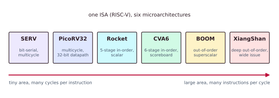
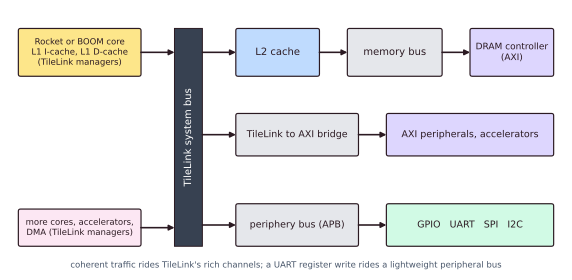

Chapter 8: Real RISC-V Cores¶
Everything in the earlier chapters (pipelining, hazards, out-of-order execution, caches, coherence and interconnect) is not only theory. It is built, in the open, in real RISC-V cores that you can read, simulate and manufacture. This chapter maps the concepts onto actual implementations, from the smallest bit-serial CPU, which fits in a few hundred FPGA lookup tables, to out-of-order cores aimed at servers, and shows how a core becomes a system-on-chip.
8.1 Why RISC-V is the perfect study subject¶
Studying "real cores" used to mean staring at a vendor block diagram in a marketing document and guessing at the register-transfer description you would never be allowed to see. Commercial x86 and Arm implementations are proprietary: you can measure them, but you cannot open them. RISC-V changes that. The instruction set is an open, royalty-free standard, and there is a whole ecosystem of open-source implementations spanning the entire design space.
The same instruction set is implemented by cores that differ by four orders of magnitude in area and performance. Because they all speak the same ISA, you can compile one binary and run it on any of them, and directly feel the microarchitectural difference. No proprietary ISA offers that luxury.
- The area-optimised end consists of bit-serial and multicycle cores (SERV, PicoRV32). The goal is to fit in the smallest possible silicon or FPGA footprint. An instruction takes many cycles; throughput is sacrificed for size. They suit deeply embedded control, "sea-of-cores" designs and teaching the raw datapath.
- The performance-optimised end consists of superscalar, out-of-order, speculative cores (BOOM, XiangShan). The goal is the maximum number of instructions per cycle, and a huge area budget is spent on renaming, reorder buffers, wide issue and big caches. They target Linux-capable application processors and servers.

8.2 Single-cycle, multicycle and pipelined¶
This is the key microarchitectural distinction at the small end, and it is worth being precise.
- Single-cycle. Every instruction completes in exactly one (long) clock cycle. It is conceptually simple, but the clock period must cover the slowest instruction's whole path, so the clock is slow. It is rarely used in practice beyond teaching.
- Multicycle. An instruction is broken into steps (fetch, decode, execute, memory, write back) executed over several clock cycles, reusing the same hardware each cycle. It is small, with one ALU and a shared bus, but has low throughput: CPI is above 1, and the core finishes one instruction before starting the next. PicoRV32 and SERV live here (SERV also serialises within a step).
- Pipelined. The steps become concurrent stages: while instruction A is in EX, B is in ID and C is in IF. The ideal CPI approaches 1. It costs pipeline registers and hazard and forwarding logic (Chapter 2). Rocket, BOOM and their relatives live here.
The trade-off in one line: multicycle spends cycles to save area; pipelining spends area (registers and hazard logic) to save cycles. Bit-serial design pushes the multicycle idea to the extreme by also narrowing the datapath to one bit, trading even more cycles for even less area.
8.3 Tiny cores: SERV and PicoRV32¶
SERV: the world's smallest RISC-V CPU¶
SERV, by Olof Kindgren, is an award-winning RV32I core built on a radical idea: process data one bit per clock cycle. A conventional core has a 32-bit-wide ALU, register-file port and bus. SERV has a one-bit datapath: its ALU is essentially a single full adder, and a 32-bit add is computed serially over 32 cycles, least significant bit first.
Why is it so small? Width costs area: a 32-bit adder needs 32 full adders and carry logic, and a 32-bit-wide register file needs 32 times the read and write multiplexing. Shrink the datapath to one bit and almost all of that vanishes. SERV fits in a few hundred FPGA lookup tables, small enough to place hundreds of them on one chip. The price is that a simple instruction takes dozens of cycles instead of one. It is the canonical answer to "how small can a real, specification-compliant RISC-V core be?". It runs the Zephyr real-time operating system and is used in massively parallel "sea-of-SERV" designs in which thousands of independent tiny cores are wanted.
PicoRV32: small, multicycle, pragmatic¶
PicoRV32, by Claire Wolf of YosysHQ, is a size-optimised RV32I[MC] core with a full-width 32-bit datapath but a multicycle control scheme. It is a workhorse: small, easy to integrate, with a high maximum clock frequency, and it runs happily on tiny FPGAs. It is one of the most widely deployed open cores in hobby and industrial FPGA designs, and its single readable Verilog file makes it the subject of the waveform lab of Chapter 11.
8.4 In-order pipelined cores: Rocket and its relatives¶
Step up the spectrum and you reach the classic design that most textbook diagrams describe: a single-issue, in-order, scalar pipeline. This is the sweet spot for efficient application-class and microcontroller cores.
Rocket, from UC Berkeley, is the flagship in-order core generated by rocket-chip. It is a five-stage, in-order, single-issue pipeline (PC generation and fetch, decode, execute, memory, write back) with full forwarding, branch prediction, an optional floating-point unit, an MMU with TLBs, and L1 instruction and data caches. It boots Linux and is the historical foundation of the whole Chipyard ecosystem. Rocket is the five-stage pipeline of Chapter 2 made real: the same IF, ID, EX, MEM and WB stages, the same forwarding paths that kill data hazards, the same branch resolution in EX that costs a control-hazard bubble. Reading Rocket's source is the fastest way to connect that diagram to synthesisable hardware.
SiFive's E and S series. SiFive, founded by rocket-chip's authors, ships commercial in-order cores built on this lineage: the E series (embedded: for example the E31 and E76, small microcontroller-class cores, like an Arm Cortex-M competitor) and the S series (64-bit embedded and real-time). They are the productised descendants of Rocket, tuned for microcontroller and real-time markets.
The Arm analogy. An in-order, dual-issue application core such as the Arm Cortex-A53, the "little" core in countless phones, occupies the same design niche as Rocket: small, power-efficient, Linux-capable and in order. The "big" out-of-order Cortex-A7x and X cores are the Arm analogue of BOOM, below. RISC-V lets you actually open the equivalent of the A53 and read its guts.
8.5 Out-of-order and superscalar cores: BOOM, CVA6, XiangShan¶
At the performance end, cores deploy the full arsenal of Chapter 3: multiple issue, register renaming, dynamic scheduling and speculation.
BOOM, the Berkeley Out-of-Order Machine¶
BOOM is the open, synthesisable, superscalar, out-of-order RISC-V core from Berkeley, written in Chisel to plug into rocket-chip and Chipyard beside Rocket. Its pipeline is the textbook out-of-order flow made real.
| BOOM stage | What it does | Concept in Chapter 3 |
|---|---|---|
| Fetch | Wide instruction fetch with advanced (TAGE-style) branch prediction to feed a wide machine | Speculation, branch prediction |
| Decode | Decodes several instructions per cycle | Multiple issue, superscalar width |
| Rename | Maps architectural registers onto a larger physical register file to remove WAR and WAW hazards | Register renaming |
| Dispatch and issue | Instructions wait in issue queues and fire out of order when their operands are ready | Dynamic scheduling, reservation stations |
| Execute | Several parallel functional units (ALU, memory, FPU): the superscalar back end | Multiple functional units |
| Commit (ROB) | The reorder buffer retires instructions in order, giving precise state and recovery | Reorder buffer, precise exceptions |
BOOM is parameterisable: you dial the issue width, the ROB size, the number of physical registers and the predictor size, then generate the hardware description. It is the standard vehicle for out-of-order research and coursework, and it demonstrates every concept of Chapter 3 in real hardware. Every buzzword of that chapter has a home here: renaming is BOOM's rename stage; reservation stations are its issue queues; the ROB and precise exceptions are its commit stage; superscalar width is its decode and execute width; speculation is its branch predictors and, unavoidably, the Spectre attack surface of Chapter 10.
CVA6 (Ariane), the application-class SystemVerilog core¶
CVA6, formerly Ariane, from the PULP group at ETH Zürich and now under the OpenHW Group, is a six-stage, single-issue, in-order 64-bit application core written in SystemVerilog. It boots Linux and has an MMU, caches and full privileged support. Although its issue is in order, it uses a scoreboard and limited out-of-order write back to tolerate variable-latency operations: a pragmatic point between strictly in-order Rocket and fully out-of-order BOOM. It is the reference "industrial-grade, verifiable" open core.
XiangShan: server-class¶
XiangShan, from the Chinese Academy of Sciences and the Beijing Institute of Open Source Chip, is an aggressively high-performance, superscalar, out-of-order RISC-V core that aims at server and desktop-class IPC: deep out-of-order execution, wide issue, sophisticated branch prediction and a large ROB. It is the open project pushing RISC-V towards the performance tier of Arm Neoverse and high-end x86, and shows that "open" no longer means "slow".
8.6 Comparing the cores¶
The whole spectrum in one table: the same ISA, radically different microarchitectures.
| Core | Pipeline style | Issue width | In order or out of order | Typical use | HDL | Area and performance tier |
|---|---|---|---|---|---|---|
| SERV | Bit-serial, multicycle | below 1 (1 bit per cycle) | In order | Deeply embedded, sea-of-cores | Verilog | Tiniest, lowest |
| PicoRV32 | Multicycle | 1 | In order | FPGA control, microcontrollers | Verilog | Tiny, low |
| Rocket | 5-stage pipelined | 1 (scalar) | In order | Linux-capable application cores, microcontrollers | Chisel | Small, medium |
| SiFive E and S | Short pipeline | 1 | In order | Commercial microcontroller and real-time | Chisel | Small, medium |
| CVA6 (Ariane) | 6-stage pipelined | 1 (scoreboard) | In order, out-of-order write back | Industrial application processor | SystemVerilog | Medium, medium-high |
| BOOM | Out-of-order superscalar | 2 to 4 or more (configurable) | Out of order | Research, high-performance application cores | Chisel | Large, high |
| XiangShan | Deep out-of-order superscalar | Wide (6 or more) | Out of order | Server and desktop class | Chisel | Largest, highest |
Read it from the top and you are reading the arc of Chapters 2 and 3: multicycle, pipelined, then out-of-order and superscalar, each rung trading more area for more performance.
8.7 The ecosystem: Chisel, rocket-chip and Chipyard¶
These cores come from a generator-based hardware ecosystem that is itself worth understanding.
Chisel (Constructing Hardware In a Scala Embedded Language) is a hardware construction language embedded in Scala. Instead of writing a fixed hardware description, you write a generator: a program that, given parameters, elaborates to synthesisable Verilog (through the FIRRTL or CIRCT toolchain). rocket-chip is the original Chisel SoC generator, which produces Rocket cores, caches, the TileLink interconnect and a bootable SoC, all parameterised.
// Chisel is generator-based: parameters -> hardware
class MyConfig extends Config(
new WithNBigCores(2) ++ // 2 Rocket cores
new WithNBoomCores(1) ++ // plus 1 BOOM out-of-order core
new DefaultConfig
)
// elaborate -> Verilog -> simulate (Verilator) or synthesise
The mental shift is that you are not editing one CPU: you are configuring a generator that emits a family of CPUs. Change one parameter (issue width, cache size, number of cores) and re-elaborate. This is why the Chisel and Chipyard ecosystem scales from a tiny microcontroller to a multicore out-of-order SoC from the same code base.
Chipyard is the umbrella framework that ties it together. It lets you compose a full SoC from a menu of components: pick your cores (Rocket, BOOM, CVA6, SERV through wrappers), attach accelerators, connect them over TileLink, add peripherals, and target simulation (Verilator or VCS), FPGA emulation (FireSim) or a real tape-out flow. It is the practical entry point for "build your own chip" with real, open cores.
The specifications and the extensions¶
RISC-V is defined by two documents: the unprivileged specification (the base integer ISA and the extensions that user code sees) and the privileged specification (machine, supervisor and user modes, control and status registers, traps and virtual memory, which is what an operating system needs). The base is deliberately minimal; capability is added by standard extensions, each of which maps onto specific microarchitecture.
| Extension | Adds | Microarchitectural implication |
|---|---|---|
| I | Base integer (RV32I, RV64I) | The mandatory core datapath. SERV and PicoRV32 stop here |
| M | Integer multiply and divide | A multiplier and an (often multicycle) divider |
| A | Atomics (LR/SC, AMO) | Coherence and interconnect support (Chapters 5 and 6) |
| F and D | Single and double-precision floating point | An FPU and a floating-point register file (optional in Rocket and BOOM) |
| C | Compressed 16-bit instructions | Denser code; an alignment path in fetch and decode |
| V | Vector | A vector register file and lanes: hardware for data-level parallelism, the SIMD story of Chapter 1 |
The common combination RV64GC, which is IMAFD plus C, is the baseline of a Linux-class application processor. The extension letters are really a shopping list of microarchitectural units: V is vector, so DLP; M is the multiplier; A is coherence support.
8.8 From core to SoC¶
A core is useful only when it is wired to memory and peripherals. That wiring is the on-chip interconnect of Chapter 6, and here it is, concretely. In the rocket-chip and Chipyard world the native fabric is TileLink. The core's L1 caches are TileLink managers; they talk to an L2 cache and then to memory; a system bus and a periphery bus fan out to the peripherals. At the SoC boundary a TileLink-to-AXI bridge connects to AXI IP (DRAM controllers, standard vendor peripherals), and a slow APB peripheral bus hangs GPIO, UART, SPI and I²C (Chapter 7) off the side.

The coherent traffic (caches to L2 to memory, carrying the MESI-style messages of Chapter 5) rides TileLink's rich channels. The simple traffic (a write to a UART register) rides a lightweight peripheral bus. Same chip, two fabrics, chosen by bandwidth and coherence needs: exactly the trade-off of Chapter 6.
RISC-V is not a chip
RISC-V is not a chip, a CPU or a company. It is an instruction set architecture, a specification. SERV, PicoRV32, Rocket, BOOM, CVA6 and XiangShan are all implementations of that specification, and they differ enormously in speed and area while running the same instructions. To say "a RISC-V" is like saying "an x86" without naming a Ryzen or a Core i9. The ISA is the contract; the microarchitecture is the engineering, and this whole book is about the second half.
8.9 Summary¶
- RISC-V is an open ISA with open implementations that span the whole design space, which makes it the ideal lens for real microarchitecture.
- SERV (bit-serial) and PicoRV32 (multicycle) trade cycles for tiny area. Rocket is the classic five-stage in-order pipeline; SiFive's E and S cores productise it, and the Arm Cortex-A53 is its analogue.
- BOOM is a superscalar out-of-order core (fetch, decode, rename, issue, ROB), with CVA6 (six-stage, SystemVerilog) and XiangShan (server-class) alongside; every feature maps back to Chapter 3.
- The Chisel, rocket-chip and Chipyard generator ecosystem composes cores over TileLink, bridging to AXI and peripheral buses, into full SoCs. The standard extensions (M, A, F, D, C, V) map onto microarchitectural units.
- RISC-V is an ISA, not a chip.
8.10 Exercises¶
Exercise 8.1. SERV and BOOM implement the same RV32I instructions and produce bit-identical results, yet BOOM can be thousands of times faster on real code. If the ISA is identical, where does the performance difference come from?
Answer
From the microarchitecture: pipelining against multicycle (and bit-serial) execution, superscalar issue width, out-of-order issue and renaming, branch prediction, and caches: in other words, every other chapter of this book. The ISA says what must be computed; the microarchitecture decides how fast.
Exercise 8.2. SERV adds two 32-bit numbers one bit at a time. How many cycles does the addition itself take, compared with a core that has a 32-bit adder? What does SERV gain in return?
Answer
SERV takes 32 cycles (one bit per cycle, least significant bit first) where a 32-bit-wide adder takes one. In return its ALU is essentially one full adder and its register-file access is one bit wide, so it needs only a few hundred FPGA lookup tables, small enough to put hundreds on a chip.
Exercise 8.3. Match each BOOM structure to the concept of Chapter 3 it implements: (a) rename stage; (b) issue queues; (c) commit stage with the reorder buffer; (d) TAGE-style fetch predictor.
Answer
(a) Register renaming, which removes WAR and WAW hazards. (b) Dynamic scheduling with reservation stations: instructions wait there and fire out of order when their operands are ready. (c) Reorder buffer: in-order commit, precise exceptions and recovery. (d) Speculation and branch prediction, which keep the window full past branches.
Exercise 8.4. Which RISC-V extension letters correspond to: a multiplier and divider; hardware that must cooperate with the cache-coherence protocol; a floating-point unit; a vector register file with lanes? What does RV64GC expand to?
Answer
M (multiplier and divider); A (atomics, which need coherence and interconnect support); F and D (floating-point unit and register file); V (vector registers and lanes, data-level parallelism). RV64GC is IMAFD plus C: the integer base, multiply and divide, atomics, single and double-precision floating point, and compressed 16-bit instructions.
Exercise 8.5. Why does Rocket correspond so closely to Chapter 2, and where would you look in a Rocket source to see forwarding and the branch bubble?
Answer
Rocket is a single-issue, in-order, five-stage pipeline with full forwarding and branch resolution in the execute stage, so its stages are those of Chapter 2. In its source you would look at the bypass (forwarding) multiplexers that feed the ALU operands from later pipeline stages, and at the logic that redirects the fetch and flushes younger instructions when a branch resolves in the execute stage.
Exercise 8.6. Explain the sentence "multicycle spends cycles to save area; pipelining spends area to save cycles".
Answer
A multicycle core reuses one small set of hardware (one ALU, one bus) over several cycles per instruction, so it is small but has a CPI above 1. A pipelined core adds registers between stages and hazard and forwarding logic so that several instructions overlap, which costs area but brings the CPI close to 1.
Exercise 8.7. What does it mean that Chipyard configures a generator rather than editing a design? Give an example of a one-line change and its effect.
Answer
The Chisel code is a program that elaborates into hardware for any given parameters, so one code base yields a whole family of designs. Replacing a Rocket-core configuration by a BOOM one (or changing the number of cores, the issue width or the cache size) and re-elaborating produces a different CPU or SoC. For example, swapping the Rocket configuration for a large BOOM configuration changes the same SoC from an in-order to an out-of-order core without touching the rest of the system.